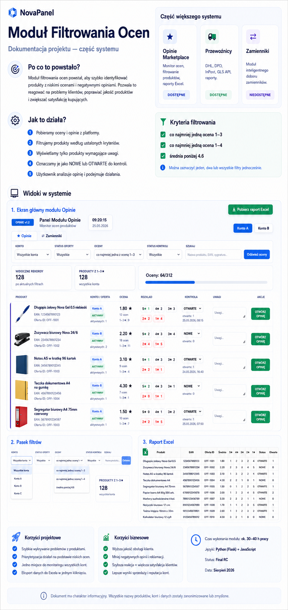
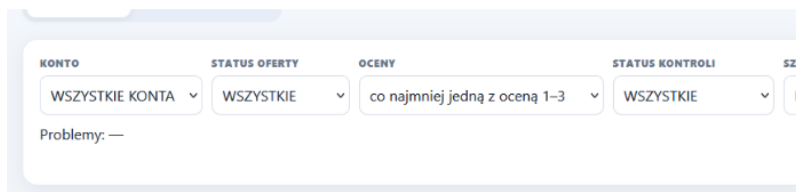
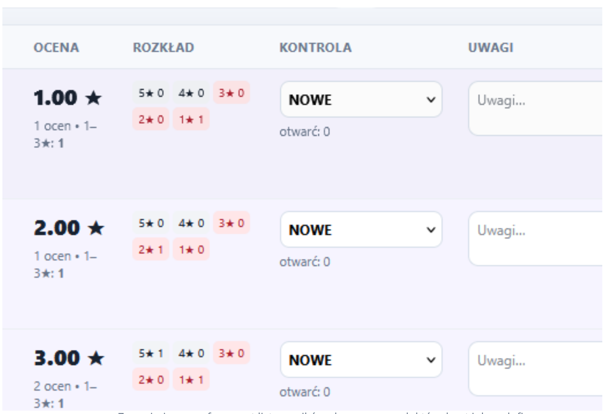

Problem operacyjny
Dane o ofertach i ocenach były dostępne, ale brakowało jednego widoku, który od razu odfiltrowałby produkty spełniające określone kryteria jakościowe.
Projekt służbowy · PYC-SPORT · 2026
Narzędzie pomagające wychwycić produkty wymagające uwagi: łączy oferty z dwóch kont, oceny produktów, liczbę aktywnych ofert i status dalszej kontroli.
Kod nie jest publiczny. Wszystkie widoczne nazwy, identyfikatory i dane zostały zanonimizowane lub wymyślone.

Działający pilotPrzy większym katalogu trudno regularnie otwierać produkty pojedynczo, porównywać ich oceny i pamiętać, które przypadki zostały już sprawdzone.
Dane o ofertach i ocenach były dostępne, ale brakowało jednego widoku, który od razu odfiltrowałby produkty spełniające określone kryteria jakościowe.
Przygotować krótką listę produktów wymagających uwagi, pokazać kontekst oceny i liczbę aktywnych ofert oraz uporządkować dalszą kontrolę.
Narzędzie nie podejmuje decyzji za użytkownika i nie automatyzuje odpowiedzi na opinie.
Najważniejszą częścią było przełożenie codziennego problemu na reguły, które da się sprawdzić i wyjaśnić użytkownikowi.
Określiłem potrzebne dane z dwóch kont, sposób łączenia ofert z produktem, kryteria filtrowania ocen, statusy kontroli oraz zakres raportu Excel.
Przygotowałem działający panel przy wsparciu AI, weryfikowałem poprawność pobieranych danych, scenariusze filtrów, przejścia do recenzji i eksport wyników. Opracowałem również anonimową dokumentację.
Panel zbiera dane, porządkuje je według produktu i pokazuje tylko przypadki spełniające wybrane kryterium.
Wczytanie ofert aktywnych i zakończonych z dwóch kont sprzedażowych.
Zestawienie oferty z oceną produktu, rozkładem ocen oraz liczbą aktywnych ofert przypisanych do produktu.
Użytkownik może wybrać konto, status oferty, kryterium ocen, status kontroli albo wyszukać konkretny produkt.
Panel pokazuje tylko rekordy spełniające warunek, bez ręcznego przeglądania całego katalogu.
Można oznaczyć przypadek jako NOWY lub OTWARTY, dopisać uwagę, przejść do recenzji oraz pobrać wynik do Excela.
Interfejs prowadzi użytkownika przez trzy momenty: zawężenie danych, decyzję, które przypadki wymagają uwagi, oraz pełny widok pracy w module. Każdy ekran pokazuje inny etap tego samego procesu.


Rezultatem nie jest deklarowana poprawa sprzedaży, której nie mierzono. Jest nim działający sposób zebrania danych, odfiltrowania produktów i przekazania wyniku do dalszej analizy.
Pobranie ofert aktywnych i zakończonych, ocen oraz rozkładu ocen, sprawdzenie liczby aktywnych ofert dla produktu, zastosowanie trzech kryteriów jakościowych i eksport listy kontrolnej.
Potencjalną wartością biznesową jest szybsze wychwytywanie przypadków wymagających reakcji. Nie przedstawiam tego jako zmierzonego wzrostu sprzedaży ani spadku liczby reklamacji.
Panel był działającym pilotem uruchamianym przez Google Colab i tymczasowy tunel Cloudflare. Nie był gotowym, stale utrzymywanym systemem produkcyjnym.
Python, Flask, JavaScript, Allegro API, Excel, Google Colab i Cloudflare Tunnel.
Stały hosting, bezpieczne logowanie, monitoring odświeżania danych, formalne role użytkowników, pełne testy integracyjne i proces utrzymania wersji produkcyjnej.
Case study nie zawiera nazw kont sprzedażowych, rzeczywistych produktów, identyfikatorów ofert, adresów panelu, danych dostępowych ani tokenów API. Widoczne nazwy i rekordy są przykładowe lub zanonimizowane. Kod pozostaje niepubliczny.
Plansza pokazuje moduł jako część większego zestawu narzędzi: od celu i kryteriów filtrowania po widok główny oraz raport Excel. Korzyści na makiecie są hipotezą zastosowania, nie wynikiem pomiaru.